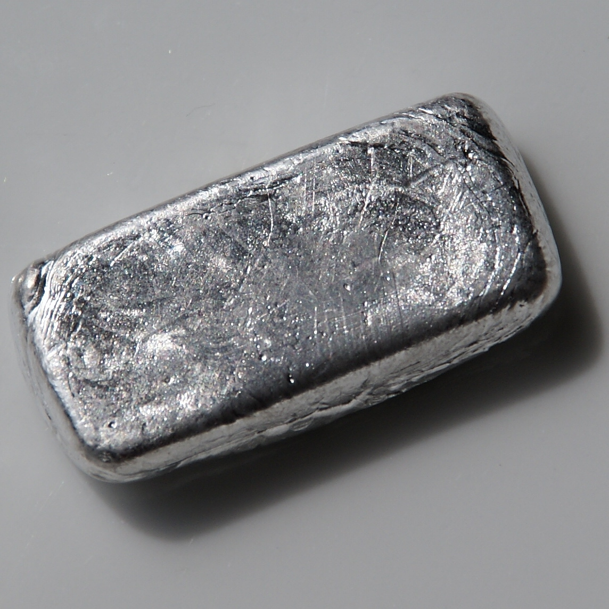

| Proprietà |
Valore |
| Nome Elemento |
Europio |
| Simbolo |
Eu |
| Massa Atomica |
151.96 u |
| Numero Atomico |
63 |
| Numero di Isotopi |
21 |
| Temperatura di Fusione |
822 °C |
| Temperatura di Ebollizione |
1529 °C |
| Densità |
5.264 g/cm³ |
| Elettronegatività |
1.2 (Scala Pauling) |
| Anno di Scoperta |
1901 (da Demarcay durante studi sul Samario) |
| Abbondanza |
Uno degli elementi delle terre rare meno abbondanti, quasi quanto lo stagno. |
| Caratteristiche |
- Metallo argenteo morbido, raro e costoso.
- Parte del gruppo dei lantanidi.
- Forma strati di ossido se esposto all’ossigeno.
- Elemento più reattivo tra i lantanidi.
|
| Applicazioni Tecnologiche |
- Fosfori per display a colori e LED.
- Laser e materiali ottici.
- Barre di controllo nei reattori nucleari.
- Inchiostri fluorescenti utilizzati nelle banconote.
|
| Localizzazione Giacimenti |
Produzione principale in Cina e Stati Uniti (~100 tonnellate all'anno). |
| Effetti sulla Salute |
I sali di europio possono essere leggermente tossici se ingeriti, ma non sono stati completamente studiati. |
| Effetti sull'Ambiente |
Non minaccia piante o animali, ma la polvere metallica può presentare rischio di esplosione. |
